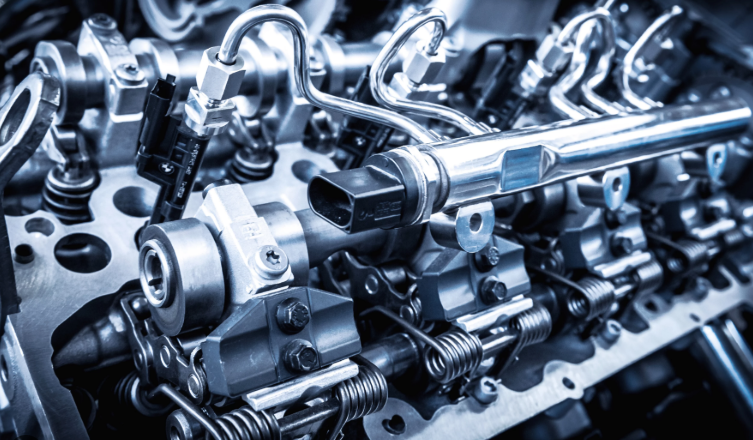
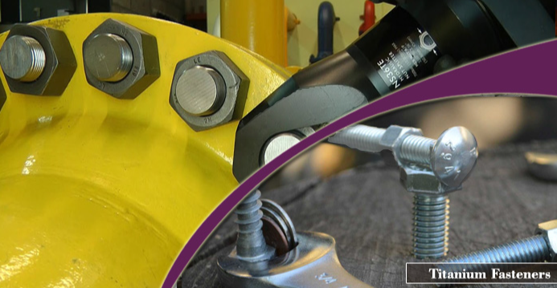
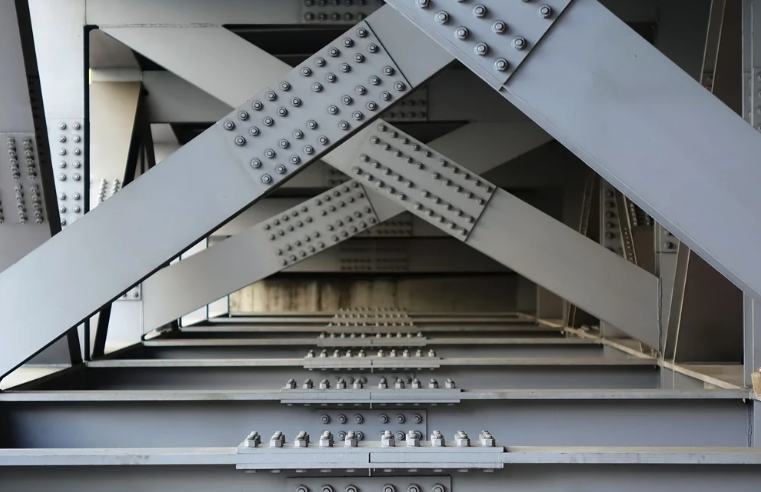
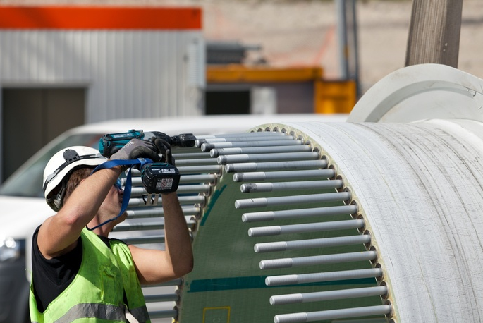

Di tengah narasi besar manufaktur, sekrup, baut, dan mur sering diabaikan, namun mereka berfungsi sebagai "Beras Industri" yang esensial. Tanpa pengencang, tidak ada mesin yang presisi, turbin angin yang menjulang, atau kereta cepat yang bisa menyatu. Secara global, triliunan pengencang dikonsumsi setiap tahun, diam-diam menghubungkan setiap sendi peradaban industri.
🔩 Apa Itu Pengencang? — Juara Tersembunyi Koneksi Industri
Pengencang adalah bagian mekanis khusus untuk menghubungkan dan menetapkan komponen. Jenis yang paling umum meliputi baut, sekrup, mur, ring, dan paku keling. Tanpa mereka, tidak ada mesin, kendaraan, atau bangunan yang bisa dirakit dengan aman. Sebagai komponen dasar yang terstandarisasi, pengencang mungkin memiliki harga satuan rendah, tetapi mereka sangat penting bagi keamanan rantai pasok.

Manufaktur Otomotif — Pasar aplikasi terbesar untuk pengencang. Ribuan pengencang digunakan dalam satu kendaraan, dari mesin hingga panel interior. Permintaan untuk pengencang ringan (paduan aluminium, titanium) pada model premium tumbuh lebih dari 12% per tahun, berdampak langsung pada keselamatan kendaraan dan ekonomi bahan bakar.

Dirgantara — Persyaratan ekstrem untuk kekuatan, ketahanan panas, dan ringan. Pengencang paduan titanium banyak digunakan pada badan pesawat dan mesin. Sebuah Boeing 787 tunggal menggunakan sekitar 50.000 pengencang titanium berkekuatan tinggi, bernilai puluhan kali lebih mahal daripada pengencang biasa.

Konstruksi & Infrastruktur — Jembatan, pencakar langit, rel kereta api, dan infrastruktur lainnya bergantung pada pengencang berkekuatan tinggi. Proyek mega seperti Jembatan Hong Kong-Zhuhai-Makau menggunakan baut performa grade 10.9 dan lebih tinggi untuk memastikan masa pakai lebih dari 100 tahun.

Mesin Industri & Energi Baru — Tenaga angin, fotovoltaik dan peralatan energi baru lainnya menuntut ketahanan lelah dan ketahanan korosi yang tinggi. Pengencang turbin angin lepas pantai harus menahan semprotan garam, topan dan getaran jangka panjang, menjadikan perlakuan permukaan dan kontrol pra-beban sebagai teknologi inti.
📌 Mengapa Empat Sektor Inti Bergantung pada Pengencang Tingkat Tinggi?
- 1 Di bawah elektrifikasi dan kecerdasan otomotif, permintaan untuk baut tarik tinggi dan pengencang anti-kendur melonjak untuk mencegah kegagalan getaran paket baterai.
- 2 Pengencang tingkat dirgantara harus melewati sertifikasi ketat (NAS, AS9100). Paduan nikel dan titanium tahan korosi telah menjadi standar.
- 3 Baut berkekuatan tinggi berdiameter besar untuk struktur baja menjamin performa seismik dan lelah gedung pencakar langit dan jembatan bentang panjang.
- 4 Baut bilah turbin angin dan baut menara memerlukan desain bebas perawatan selama 20 tahun; proses pelapisan dan perlakuan panas menentukan keandalan.
Dengan majunya Industry 4.0, pengencang diberi misi "koneksi pintar". Beberapa produsen terkemuka telah mulai menyematkan sensor untuk mencapai pemantauan pra-beban real-time, menandai evolusi pengencang dari bagian pasif menjadi simpul kunci dalam jaringan industri pintar.
🏭 Batas Teknologi: Ringan · Perlindungan Korosi · Anti-Kendur Pintar
Pengencang modern melampaui kekuatan menuju evolusi multidimensi: material ringan (paduan titanium, paduan aluminium, pengencang komposit) membantu pesawat dan kendaraan energi baru mengurangi berat; Pelapisan Dacromet, seng-aluminium dan pelapisan berbasis bio memenuhi persyaratan lingkungan tarif karbon; anti-kendur pintar dan kontrol torsi digital menghindari risiko kendur tradisional.
Transisi Hijau yang Dipercepat — Dengan implementasi Mekanisme Penyesuaian Perbatasan Karbon (CBAM) UE, penelusuran jejak karbon pengencang telah menjadi "paspor ekspor". Perusahaan pengencang terkemuka membangun taman industri nol-karbon dan mengadopsi proses cold heading energi hijau untuk mengurangi emisi karbon per bagian.
Peningkatan Manufaktur Pintar — Cold header multi-stasiun otomatis penuh, penyortiran visi AI dan integrasi MES telah meningkatkan hasil lulus pertama pengencang hingga lebih dari 99.5%. Kluster pengencang Tiongkok seperti Yongnian dan Haiyan beralih dari "manufaktur" ke "manufaktur pintar".
📊 Wawasan & Tren Pasar Pengencang Global
- 5 Pasar pengencang industri global mencapai $93,12 miliar pada 2025 dan diproyeksikan melebihi $136,95 miliar pada 2034, dengan CAGR 4,3%.
- 6 Ekspor pengencang Tiongkok melebihi $10 miliar (distrik Yongnian saja menyumbang lebih dari $10 miliar), mencapai lebih dari 160 negara dan wilayah.
- 7 Nilai pengencang per kendaraan energi baru sekitar 30% lebih tinggi daripada kendaraan bahan bakar konvensional, menjadikan pengencang ringan sebagai pasar lautan biru.
- 8 Pasar pengencang dirgantara tumbuh 7,5% per tahun, dengan ekspansi armada di wilayah Asia-Pasifik mendorong permintaan tambahan yang signifikan.
⚙️ WT Fasteners: Solusi Pengencang Tingkat Tinggi Satu Atap
32 Sebagai produsen pengencang presisi terkemuka, WT Fasteners (wtscrews.com) menawarkan rangkaian lengkap produk dari baja karbon, baja paduan hingga baja tahan karat dan paduan titanium, melayani sektor otomotif, energi, transit rel dan lainnya. Semua produk disertifikasi ISO 9001:2025 dan IATF 16949, dengan kemampuan kustom non-standar.
34 Perusahaan telah memperkenalkan peralatan cold heading canggih dari Jepang dan Jerman, bersama dengan lini penyortiran pintar, memastikan setiap pengencang mencapai stabilitas proses tinggi (Cpk ≥ 1,33).
36 Didukung oleh rantai pasok global dan tim respons cepat, WT Fasteners menawarkan waktu tunggu 7–15 hari, ditambah konsultasi desain anti-kendur profesional dan layanan pengujian torsi.
38 Dalam beberapa tahun terakhir, WT Fasteners telah memasok baut berkekuatan tinggi tahan embrittlement hidrogen ke beberapa OEM turbin angin dan pemasok Tier 1 kendaraan energi baru. Produk berkinerja sangat baik di ladang angin pesisir, mendapatkan "Penghargaan Keunggulan Kualitas".
🌱 Keunggulan Inti Memilih WT Fasteners
- ✓ Dapat dilacak sepenuhnya: setiap batch termasuk laporan uji material dan data uji koefisien torsi.
- ✓ Perlakuan permukaan satu atap: paduan seng-nikel, Dacromet, Geomet, pelapisan serpihan seng-aluminium dan proses ramah lingkungan lainnya.
- ✓ Kemampuan pengembangan kustom: dari gambar hingga produksi massal dalam waktu sesedikit 20 hari, mendukung iterasi R&D.
- ✓ Pengalaman pengiriman global: mengekspor ke UE, Amerika Utara, Asia Tenggara, sesuai dengan standar RoHS/REACH.
Kecil adanya, pengencang membawa keandalan dan keselamatan raksasa industri. WT Fasteners berpegang pada misi "Pengencangan Kerajinan, Menghubungkan Dunia", terus mendorong industri manufaktur menuju masa depan yang lebih presisi dan hijau.
Untuk detail produk atau dukungan teknis, silakan kunjungi Halaman Produk kami atau hubungi tim kami.
📞 Informasi Kontak
WhatsApp: +86 13303009593
Email: info@wtscrews.com
Situs Web: wtscrews.com
🏷️ Merek: WT Fasteners — Koneksi Presisi, Menggerakkan Masa Depan Industri